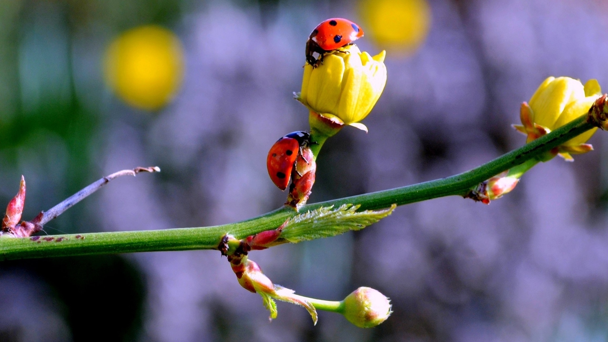
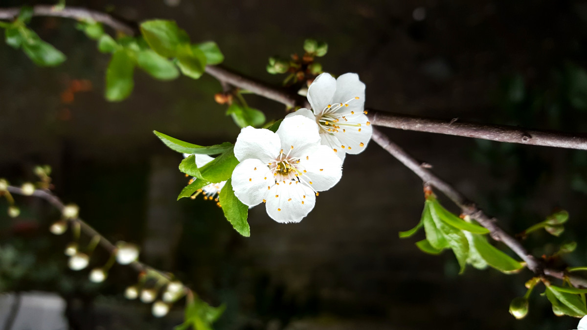
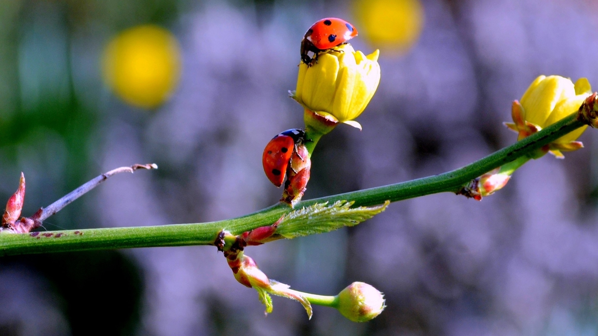
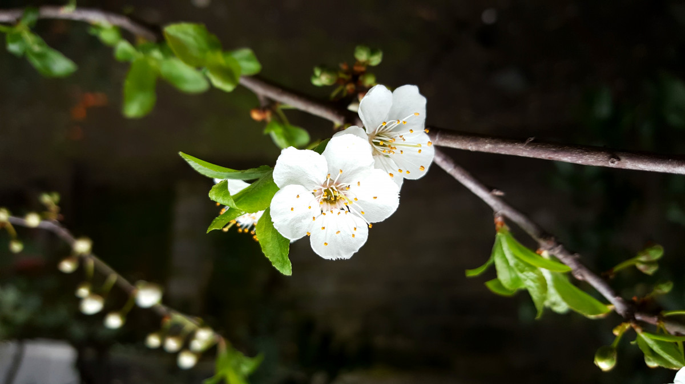

Но возрожденья весть живая
Уж есть в пролётных журавлях,
И, их глазами провожая,
Стоит красавица степная
С румянцем сизым на щеках.

Но возрожденья весть живая
Уж есть в пролётных журавлях,
И, их глазами провожая,
Стоит красавица степная
С румянцем сизым на щеках.
 



| Март | 31 день |
| Апрель | 30 дней | Май | 31 день |